idle_1默认待机
1唯一主题：罗小黑
23已配置的动作状态
3逐帧动作组
1统一素材检查入口
判定标准：以 frontend/assets/pet/*/theme.json 里的 GIF 配置为主，再对照前端引用和文件是否存在。这样能区分“已经接入应用”和“只是放在项目里的候选文件”。
罗小黑 GIF 状态表
罗小黑是当前唯一主题。下面只列已经被主题配置实际调用的 GIF，不把旁边的检查图、预览图和未接入素材混进来。
| 预览 | 状态 | 触发场景 | 文件 | 规格 | 播放 |
|---|---|---|---|---|---|
idle_1 |
默认待机 | frontend/assets/pet/luoxiaohei/gif/luoxiaohei-idle-1.gif |
240x264，45 帧，418.6 KB | 循环 | |
 |
idle_2 / drag |
长时间待机；拖动时临时复用 | frontend/assets/pet/luoxiaohei/gif/luoxiaohei-idle.gif |
200x200，8 帧，28.3 KB | 循环 / 拖动 0.7 秒 |
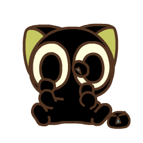 |
focus |
番茄钟专注中 | frontend/assets/pet/luoxiaohei/gif/luoxiaohei-focus.gif |
240x240，5 帧，26.8 KB | 循环 |
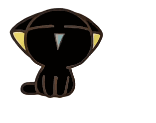 |
rest |
专注结束后的休息阶段 | frontend/assets/pet/luoxiaohei/gif/luoxiaohei-rest.gif |
313x247，123 帧，571.1 KB | 循环 |
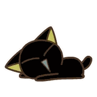 |
sleep |
长时间未操作 | frontend/assets/pet/luoxiaohei/gif/luoxiaohei-sleep.gif |
200x200，37 帧，269.9 KB | 循环 |
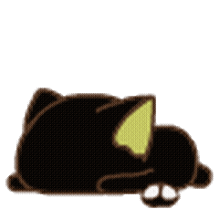 |
hungry_heavy |
重度饥饿 | frontend/assets/pet/luoxiaohei/gif/luoxiaohei-hungry-heavy.gif |
240x240，44 帧，587.4 KB | 循环 |
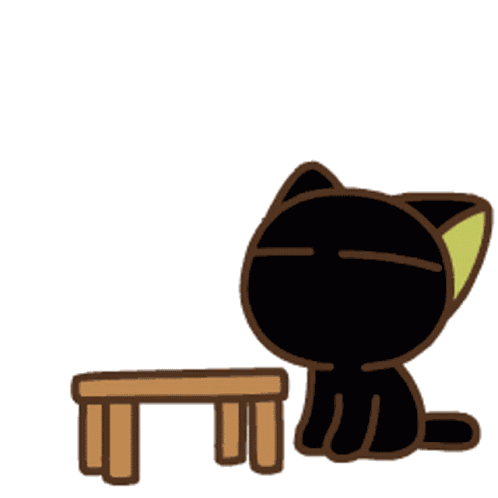 |
angry |
生气 | frontend/assets/pet/luoxiaohei/gif/luoxiaohei-angry.gif |
498x498，33 帧，589.0 KB | 循环 |
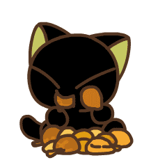 |
eating |
通用吃饭兜底 | frontend/assets/pet/luoxiaohei/gif/luoxiaohei-eating.gif |
240x240，22 帧，101.6 KB | 循环 |
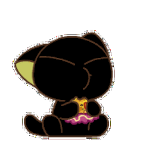 |
eating_pizza |
披萨专用进食动画 | frontend/assets/pet/luoxiaohei/gif/luoxiaohei-eating-pizza.gif |
240x240，28 帧，94.4 KB | 循环 |
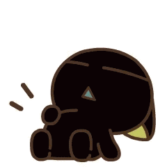 |
finished_eating |
吃完后的开心反馈 | frontend/assets/pet/luoxiaohei/gif/luoxiaohei-finished-eating.gif |
240x240，24 帧，120.0 KB | 播放 3 秒 |
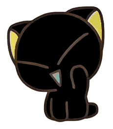 |
greet |
打招呼 | frontend/assets/pet/luoxiaohei/gif/luoxiaohei-greet.gif |
231x264，45 帧，339.1 KB | 播放 1.35 秒 |
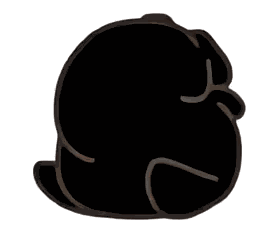 |
roll |
功能面板选择“打滚” | frontend/assets/pet/luoxiaohei/gif/luoxiaohei-roll.gif |
264x248，54 帧，273.6 KB | 播放 1.8 秒 |
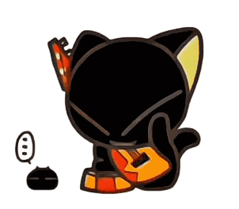 |
guitar |
功能面板选择“弹吉他” | frontend/assets/pet/luoxiaohei/gif/luoxiaohei-guitar.gif |
302x264，62 帧，740.3 KB | 播放 1.9 秒 |
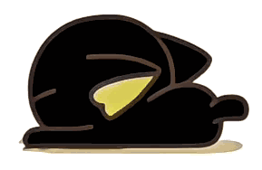 |
scratch |
功能面板选择“磨爪子” | frontend/assets/pet/luoxiaohei/gif/luoxiaohei-scratch.gif |
289x188，39 帧，234.1 KB | 播放 1.5 秒 |
stretch |
功能面板选择“伸懒腰” | frontend/assets/pet/luoxiaohei/gif/luoxiaohei-stretch.gif |
900x900，60 帧，1274.5 KB | 播放 5 秒 |
预览总览
这一块更接近参考仓库 README 的展示方式，方便一眼检查每个状态对应的角色表现。
罗小黑
idle_2 / drag长时间待机 / 拖动
focus专注中
rest休息
sleep睡觉
hungry_heavy重度饥饿
angry生气
eating普通喂食
finished_eating吃饱反馈
greet打招呼
roll打滚
guitar弹吉他
scratch磨爪子
stretch伸懒腰
同一主题里正在用的非 GIF 动画
这些不是 GIF，但也是当前桌宠动画的一部分。为了避免遗漏项目素材，这里单独列出。
- 罗小黑 happy
frontend/assets/pet/luoxiaohei/happy/
逐帧图片，用于完成专注后的开心反馈。 - 罗小黑 run
frontend/assets/pet/luoxiaohei/run/
逐帧图片，用于功能面板里的跑步动作。 - 罗小黑 surf
frontend/assets/pet/luoxiaohei/surf/
逐帧图片，用于功能面板里的冲浪动作。 - 罗小黑 hungry / tap / exercise
frontend/assets/pet/luoxiaohei/gif/*.webp
虽然目录名叫 gif，但这几项实际是 WebP。 - 罗小黑特殊进食
frontend/assets/pet/luoxiaohei/gif/*.png和frontend/assets/pet/luoxiaohei/gif/luoxiaohei-eating-pizza.gif
汉堡、鸡腿继续使用 PNG，披萨改为透明 GIF。
候选素材位置
项目里还有不少 GIF 候选文件，它们目前没有全部接入主题配置。后续换动作时可以从这些位置挑选，再同步到主题状态表。
- 在线候选
online_candidates/
包含下载或拆分后的罗小黑 GIF、WebP、MP4 片段。 - 根目录处理稿
luoxiaohei_*、licking the claw.gif、罗小黑表情包_2_爱给网_aigei_com.gif
多为早期处理稿或测试输出。 - 应用内未接入 GIF
frontend/assets/pet/luoxiaohei/gif/luoxiaohei-drag.gif等
文件存在，但当前主题配置不一定调用。